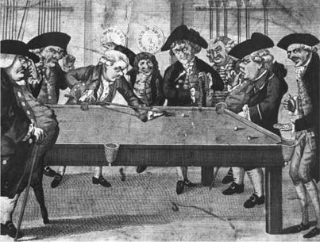

在休谟的哲学中，影响最大、最持久的要素莫过于他的因果性理论。这个理论经常受到攻击，也经常遭到误解。我们不应把所有误解都归于批评者的恶意。拉姆齐在《数学基础》结尾处的一篇论文中所提出的理论与休谟的理论基本相同。虽然我同意拉姆齐的看法，认为“从读者们做出的刻板解释来看，休谟高估了他们的智力”，但在某种程度上，误解是休谟自己导致的。我将会指出，虽然休谟在许多细节上容易遭受攻击，部分是因为他错误地坚持追溯观念的根源，部分是因为他倾向于过分简化事实，但他的基本信条不仅无法回应，而且完全值得信任。
首先要明确的一点是，休谟在谈到“原因与结果的关系”时，是在比现在更宽泛和更松散的意义上来使用术语的。我们已经习惯于区分因果定律和函数定律，区分因果定律和统计定律，或者区分有直接因果关联的事件和作为共同原因之结果的事件或者都从某个主导理论中导出的事件，而休谟的用法却把事实之间的任何似律（lawlike）关联都称为因果关联。诚然，当休谟把或然性置于一个由知识（被定义为“由观念的比较而得到的保证”）占据首要位置、“证明”（此时因果论证的结果被接受，没有任何伴随着或然性的不确定性）占据第二位置的证据天平上时（T 124），他进而区分了基于偶然的或然性和从原因中产生的或然性，但这里并没有什么不一致，因为休谟坚称，“偶然之中必定总是混杂着一些原因，以成为任何推理的基础”（T 126）。除了把统计定律作为基于原因的或然性，他没有为统计定律留出任何余地，这正好确证了我一直主张的观点。事实上，我们可以批评休谟的用法忽视了重要的区分，甚至对或然性作了一种不能令人满意的说明，但我们将会看到，它的缺陷并未损害其基本论证的发展。
休谟术语的另一个不同寻常的特征是，他常常说因果关系存在于对象之间，事实上他正是如此定义的，尽管人们往往说他认为因果关系存在于事件之间。这种修正对他没有损害，因为在这种关联中，他对对象的提及很容易被改述为对事件的提及，他把感情和意志等心灵要素包括在原因和结果中正是它的某种证明。我自己的看法是，对他的意图的最佳描述是，把这种关系解释成存在于事实之间，对象与事件、行动与激情、状态与过程，无论是物理的还是心灵的，都可以按照哪个术语显得合适而被纳入事实。这种做法不仅符合休谟对关系范围的扩大，而且由于事实与真命题相关，它还有助于引出这样一种观点，即休谟主要把因果关系当成推论的根据。
这一点还可以说得更强。我们已经看到，休谟认为我们观念的联系依赖于三种关系，即相似关系、邻近关系和因果关系，但前两种关系与第三种关系有一种功能的差异。表达这种差异的一个很好的方法是说，前两种关系为我们注意力的运动铺设了道路，第三种关系则是我们事实信念的主要来源。对一个对象的印象或观念很容易唤起另一个与之类似的或显得与之邻近的对象的观念，但这一过程到此为止。除了那些已经处于记忆或感官领域之内的信念，它并不导向任何信念。无论是单独考虑还是一起考虑，这些关系都不会使我们相信那些尚未出现在我们经验中的特殊实在的存在性。为此，我们不得不依靠推理，正如休谟在《〈人性论〉摘要》和《人类理解研究》中指出的：
然而，对事实推理的理解并不限于分析它们所基于的关系。这些推理从这种关系中得到的支持也是一个问题，休谟理论的意义几乎完全系于它如何阐明这第二个问题。
尽管如此，我们可以从休谟对因果性的实际描述入手。休谟的程序是，先将进入日常关系观念中的要素加以区分，再去寻找导出这些要素的印象。除了混淆了心理问题与他常犯的逻辑问题，这里他的方法也有循环论证之嫌。正如我们已经指出的，他认为因果性是在物体和事件的层次上起作用，而在达到这一层次的过程中，他已经需要利用事实推理了。但这个循环似乎并不是恶性的，虽然他的衍生进路导致他对因果关系给出了过于狭窄的论述（尤其是考虑到他让此关系担负的工作量），但引起的危害并不很深，他的主要论点并未受其影响。
在分析我们的因果关系观念时，休谟认为它是复合的。它本质上包括在先性、邻近性和他所谓的必要关联这三种关系。事实上，因果关系根本不是一种关系，无论取“关系”一词的何种含义，但休谟至少在开始时是这样来谈论它的。就前两种关系而言，观念与印象的相配还算明显。对休谟来说，发现一种印象，可以从中导出必要关联的观念，这是一个非常严重的问题。
这个问题触及了休谟因果性理论的核心，在考察他对这个问题的处理之前，也许应该说，我怀疑这三个要素中的任何一个是否真如休谟所说对于我们的因果关系观念不可或缺。他把邻近性视为不可或缺的理由是：
在休谟那个时代的一般观点看来，这也许的确是真的，但超距作用概念并无矛盾之处，即使在今天，接受超距作用概念的科学理论也不会仅仅因此而遭到拒斥。不仅如此，休谟本人也允许因果性在各种情形中起作用，在这些情形中不仅没有空间上的邻近性，甚至根本没有任何空间关系。这些情形是指我们的思想和感受产生物理的原因和结果的情形。因为在休谟看来，只有有颜色的或可触的东西才能被真正赋予空间属性：他对我们是否有权把空间位置归于其他感官的材料表示怀疑，即使基于这些感官材料与视觉和触觉对象的联系；他认为在思想和感受的情况下，“一个对象可以存在但不在任何地方”这一基本原理显然得到了满足。在这一点上休谟是否正确可以争论。我认为通俗的回答可能是，我们的思想存在于我们的头脑之中，但除非我们认为这是把心灵事件不正当地等同于大脑事件，否则这很难被视为真的。而且，无论有什么理由赋予我们的思想一个象征性的位置，比如给思想指定某个大脑区域，认为思想因果地依赖于大脑，也仍然不能得出结果说，思想在空间上邻近于它们的原因。
休谟的确有理由坚称，原因必定先于结果，尽管在某些情况下，原因和结果似乎有可能同时出现。
由此休谟推论说，如果某一原因“与其结果可以完全同时”，那么所有原因都必定如此。这里的推理没有完全说清楚，但似乎基于这样一个假设，即任何一组充分条件都会尽可能快地产生其结果，因此如果在这种意义上，一个原因能产生一个与它同时的结果，那么任何一组没能产生与它同时的结果的条件就不是充分条件。如果我们像休谟那样进一步假设决定论，因此每一个结果都至少是进一步原因的一部分，我们就废除了相继，从而废除了时间。因为正如休谟所说，“如果一个原因与它的结果是同时的，这个结果又与它的结果是同时的，如此等等……那么所有对象都必定是同时存在的”（T 76）。
休谟似乎对这个论证的有效性有些怀疑，但为了保护自己，他又说“此事并不很重要”。在这两件事上他都是正确的。他对因果性的进一步分析中没有任何东西依赖于“原因必先于其结果”，他的论证是无效的。这个论证的前提要求原因与结果之间不能有时间间隔，但并不排除二者的重叠，如果这种重叠在某些情形中是部分的，那么就没有理由说为什么这种重叠在其他情形中不能是完全的。这个前提本身也并非强迫。如果像休谟那样让因果概念依赖于定律概念，我们就没有逻辑理由在定律所连接的两个事态之间排除任何时间间隔。在时间和空间上，我们都可以接受超距作用的可能性。
我之前说过，我怀疑必要关联的要素是否本质上包含在通俗的因果性概念之中。这部分是出于宽容，因为我要论证说，除非给这个概念一种非常人为的解释（正如我们将会看到的休谟对它的解释），否则这个词根本不适用于事实，我宁愿避免给公众带来这样一种思想混乱，即它的因果性概念没有应用。即使如此，如果有社会调查表明，大多数与因果性发生联系的人都有某种关于能力、力量或动因的模糊观念，我也不会感到惊讶；在那种情况下，我仍将保持宽容，使这些观念脱离关于使因果判断变得可接受的实际因素的描述。
无论如何，在论证的这个阶段，重要的是（休谟也承认），在先性和邻近性对于因果性来说是不充分的，即使它们是必要的。我们还需要某种东西，甚至可能是完全不同的东西。它会是什么呢？休谟给出了一个答案，但我们将会看到，这个答案本身没有使他得出这个答案的思路重要，这种出色的思路与其说源于他肯定的东西，不如说源于他否定的东西。
他首先否认独立的事实之间存在着逻辑关系。正如他在《人性论》中所说，我们可以信赖这样一个原则：“任何对象本身都不含有任何东西能使我们有理由引出超出它本身的结论。”（T 139）在《人类理解研究》中，他又进一步论证说：“凡可理解的、可以清晰构想的东西都不蕴含矛盾，任何证明性的论证或抽象推理都不能先验地证明它为假。”（E 35）他举了各种例子，比如他坚持认为，他能清晰分明地设想，一个在所有其他方面都与雪相似的问题“却有着盐的味道或火的感受”；“所有树木都在12月和1月茂盛，在5月和6月枯萎”这个命题是完全可理解的（E 35）；从“一个台球沿直线滚向另一个台球”这个前提永远不可能“从第一个球的运动和推力来推断第二个球的运动”（T 650）。如果在这些情形中，或者在他给出的其他许多例子中，我们推出一个相反的结论，那是因为我们正在根据我们过去的经验进行投射。就逻辑而言，任何东西可以产生任何事物。
这一步无疑是有效的，但在阐述这个论证时却要小心。我们必须避免被一个事实所误导，即我们往往通过对象彼此之间的实际关系或可能关系来描述对象，在描述时常常会或隐或显地提到它们的因果性质，尤其在描述人工制品时。例如，在把某物称为钢笔时，我们暗示它是为了服务于留下清晰的笔迹这个目的而设计的；一面镜子若要名副其实，就必须能够反射出镜像；火柴是某种在特定条件下摩擦时会产生火苗的东西；等等。不仅在日常用法中可以找到无数这样的例子，而且可以把这个过程弄得任意长。在任何情形中，只要我们想声称两种属性总是联系在一起的，我们都可以用一种简单的策略来保证它们的联系，即对迄今为止只代表其中一个属性的谓词进行重新解释，使它渐渐代表两者的结合。同样，我们也常常能够通过构造一种演绎理论，认为它们表达了定义或其逻辑推论，来重新解释表达经验概括的句子。
然而面对休谟的论证，这种操纵显然并不能提供真正的保护。当我们追问这些定义是否被满足时，在定义之下隐藏的、显然被我们压制的经验问题又渐渐暴露出来。如果我们可以操纵谓词来建立逻辑关联，我们也同样可以把过程颠倒过来：一种复杂属性可以分解成它的不同要素；我们也可以对相关谓词进行解释，使之成为一个经验问题，即“它们是否共同得到满足”。
但是，在拆解某个有逻辑关联的概念结构时，难道我们的能力没有限制吗？休谟的论证要求每一个对象都能“就其本身被思考”。我们很确定这总是可能的吗？的确，只要我们是在讨论感觉性质甚或是特殊印象，似乎就没有困难，但休谟的论证所适用的事实却不在这个基本层次。它们涉及物体的行为，有理由说不能个别处理这些东西，就好像其他东西不存在似的。它们位于一个时空系统之中，可以认为这要求对任何个别对象的确认都预设了存在着和它有某种时空关系的其他对象。但有一个保留条款，因为这种对其他对象的提及是非常一般的。与被确认对象有时空关系的所有对象中，这种确认并不特别需要涉及任何一个对象。因此，要想满足休谟关于对象应当就其本身被思考的要求，我们只需认为它意味着，对于任何两个对象x和y，我们可以通过关于不涉及其中一个对象的描述来确认其中另一个；如果这一条件得到满足，他的以下结论就会像需要的那样成为重言式：在这样一种描述下，由一个断言x存在的陈述导不出关于y是否存在的陈述。
对休谟来说，他可以使用这一重言式，因为他的另一个论证，即任何事实的反面都可以被清晰地构想出来，并不令人信服。其弱点在于假定我们认为可理解的东西必定在逻辑上是可能的。W.C.尼尔教授在1949年出版的《或然性与归纳》中提出过一个反例。一般认为（虽然并不是普遍认为），如果一个纯粹数学的命题为真，则它必然为真。因此，如果是这样，而且休谟是正确的，那么一个真数学命题的反面就不应是可设想的。但现在让我们考虑一下哥德巴赫猜想，即任何一个大于2的偶数都是两个质数之和。这个猜想从未被证明，也没有发现过例外。如果我们允许数学命题可真可假，不论我们是否有一个证明，并且如果坚持它们的必然性，那么我们必定会得出结论说，哥德巴赫猜想和其否定必有一个逻辑上为假，但每一个似乎都同样可以设想。
即使我们不愿意做出那些支持这个例子所需的假设，我想还是应该承认，诉诸我们所能设想的东西并不能给我们提供一种万无一失的逻辑可能性标准。并非所有矛盾都能明显直接地显露出来，反过来，在逻辑上可能的命题，甚至是真命题，也可能超出我们的想象。例如，我们一直被教导去相信空间弯曲，但我想在爱因斯坦提出他的相对论之前，大多数人都会认为这不可思议。因此我认为，虽然休谟关于通常自然进程变化的例子有一定的说服力，但我们要凭借自己的力量把语言在我们对事实的描述（正如我所说，休谟的论证牢固地以此为基础）之间锻造的逻辑关联切割开来。
尼尔利用哥德巴赫猜想所要捍卫的立场碰巧不是“因果关系例证了逻辑必然”，而是“自然定律就是尼尔所谓的必然性原则”。如果说这种观点有什么特殊价值的话，那就是它把我们带到了休谟的第二个重要的否定，即可能存在着像“自然的必然性”这样的东西（如果这意味着事实之间可能存在着康德所谓的综合关系），即使这些关系的存在在逻辑上无法证明，这些关系也是必然的。
休谟的论证只不过是说，这种关系都是不可观察的。如果以他最喜欢的台球游戏为例，我们的确用一些“有力”的词谈论用球杆来“击”球以及一个球“撞上”另一个球，但我们实际观察到的仅仅是时空关系的一系列变化。首先是击球者手臂的移动，同时伴随着球杆的运动；然后在一瞬间球杆和球发生空间接触；然后是球相对于其邻近物体运动一段时间；然后在一瞬间这个球与第二个球发生空间接触；再往后是一小段时间两个球都在运动；最后，如果击球者这一杆打得成功，在又一瞬间第一个球会与第三个球发生空间接触。在这整个过程中，没有任何可观察的关系需要用“能力”“力”或“必然联系”等词来为其命名。我们可能选用的其他任何例子也是如此，不论它是一系列物理事件，还是物理属性的结合。正如休谟所说，我们从来没有一个印象可以从中导出必然联系的观念。

图8 台球的碰撞是休谟的因果关系范例。台球是18世纪末英国有闲阶层酷爱的运动——根据吉尔雷所绘的这张漫画，这种酷爱过度了
如果有人在寻找这一印象，那么寻找它的最明显地方就是一个人自己的行动经验。难道我们不能从自己的意志活动中找到这种印象吗？休谟在《人类理解研究》中考虑了这一点，并且提出了三个反驳。第一个反驳是，我们并不理解“灵魂与肉体的结合”这一原理，如果意志给了我们能力的印象，我们就应当理解这一原理；第二个反驳是，我们无法解释我们为什么能够移动某些身体器官，却不能移动其他器官，如果只有在合适的情况下我们才意识到有一个力在起作用，我们就不会对这个问题感到为难了；第三个反驳是，“我们从解剖学中得知”，严格说来我们根本没有能力移动我们的四肢，而只能让神经或“灵魂精气”运动起来，从而最终使四肢运动起来；我们肯定意识不到在我们的意志活动与这些“灵魂精气”或诸如此类的东西的运动之间有什么力的关系（E 64—67）。
我认为我们可以不受这些论证的影响。常有人说，当我们有意志活动或以各种常用方式去处理对象时，我们就经历了一种经验，它与产生某物的经验相符；我们以这种方式所能做的是有限的，我们也许对完成此类事件所必须满足的物理条件一无所知，但这本身并不足以使这种描述成为不恰当的。事实上休谟本人也说，当我们试图克服物理阻力时，我们体验到一种“灵魂上的努力”，他承认这种体验在很大程度上进入了通俗的能力观念，即使这种通俗观念既不清楚又不准确（E 67）。
但我现在必须声明，无论这个问题是对是错，无论它有多大的心理学价值，它对于休谟的论证来说都是无关紧要的。我们必须记住，休谟关注的是把因果性当作事实推理的根据；它必须架起一座桥梁，将我们从一个事实的真实信念安全地过渡到对另一个事实的真实信念。因此，即使我们拥有可以被恰当地称为“能力的运作”的经验，这些经验也与本题无关，因为它们不能被一般化。对我的某些特殊行动的忠实描述会或隐或显地蕴含我曾经经历过这种经验，由这个事实（如果它是事实的话）根本推不出，我自己再去重复这个行动时会有同样的经验或者获得相同的结果。这两个行动之间并无逻辑关联，我们可以在心理学理论所容许的范围内对其中某一个行动作尽可能详细的描述，但它对另一个行动的性质传递不出任何东西。
寻求物理世界中的必然性也是如此。这里，休谟同样没有完全公平地对待他的论证，他似乎使之基于一种经验概括而不是基于逻辑论证。如果我们回到他的台球例子，我认为他说的不错，即在实际现象中觉察不到任何力或力量的关系。他忽视的一点是，这些关系是否可以被觉察到并不重要。因为让我们假定，两球相撞时我们的确观察到了某种可以被称为力的传递的东西，因此我们在对事实的描述中提到了它。就我们做出推论的能力而言，这种复杂情况会使我们止步不前。让我们把两个球称为A和B，把它们之间据说强有力的关系称为R。如果对A和B在未来的空间相遇是否会产生与之前相同的后果感到怀疑，那么我们对A与B在未来空间相遇时是否会再次有R的关系，以及是否会有相同的后果，也会感到怀疑，甚至会更加怀疑，因为现在假设了更多的东西。也许有人会反驳说，在第二种情况下，怀疑可以被关系R的本性所解除。如果A与B有关系R，那么A必定会把运动传给B，这意味着在相似的条件下，它在任何情况下都会如此。但这种反驳完全是错误的，因为要么R是一种纯现象关系，也就是一种对现象的准确观察足以确立其存在的关系，要么不是。如果是，那么它的存在将完全中立于在任何其他位置或时间发生的事情。如果不是，那么只有当它的定义中蕴含着任何被它联系起来的项在相似条件下都会显示出相似的行为时，它才能服务于预定的目标。但这就使这个例子成为因果命题被命令为真的另一种情形，同样的反驳对它来说是致命的。此外，根据这种解释，在任何一个事实联系的事例中都觉察不到必然联系，这看起来像是一个经验命题，却被发展成了一个逻辑真理。因为现在对这种关系的定义使我们不得不考察相关现象的每一个事例，以便发现它在所有事例中都成立。
关于必然性问题，我们的论述可以到此为止了，尽管在事实推理的根据方面仍然可以说很多。但由于假定我们有必然联系的观念，休谟的原则驱使他继续探究可能是这个观念的来源的印象。他知道，仅仅增加例子是无济于事的。在陈述了那个我们已经引用过的原则，即“任何对象本身都不含有任何东西能使我们有理由引出超出它本身的结论”之后，休谟又提出了另一条原则：“即使在观察到对象的频繁连接或恒常连接之后，我们也没有理由引出超出我们经验的关于任何对象的推论”（T 139），而且如果我们如休谟在这里所做的那样仅限于演绎推理，那么这条原则的真理性和第一条原则同样明显。然而，正是在增加事例的过程中，休谟找到了结束其探究的线索。他的理论是，观察到重复出现的事实的频繁连接或恒常连接会产生一种期待这种规律性重复出现的心灵习惯或习俗。正如休谟在《人类理解研究》中所说，事例的增加所造成的区别是，“受习惯的影响，一个事件一出现，心灵就期待它通常的伴随，并相信那种伴随将会存在”（E 75）。正是在“我们的心灵感受到的联系中，在想象力习惯性地从一个对象转向它通常的伴随”中，休谟发现了“使我们形成力量观念或必然联系观念的感情或印象”（E 75）。我们要继续的只不过是我们过去对于自然界中规律性的经验；事实上，除此之外再没有更多的东西需要发现。我们变得习惯于期待这种规律性被保持。这种习惯或习俗在我们身上已经如此根深蒂固，我们会把联想的力量投射到现象本身当中，从而屈从于一种幻觉，以为“必然联系”是现象之间实际存在的一种关系的名称。
这样一来，休谟就可以定义因果性了。在《人性论》和《人类理解研究》中，根据关系被视为“自然的”或“哲学的”，也就是说，根据我们是只关注展示关系的现象，还是也考虑我们如何看它们，休谟给出了两种定义。在第一种情况下，原因在《人性论》中被定义为：“一个先于且邻近于另一个对象的对象，凡与前一个对象类似的对象都同那些与后一个对象类似的对象处于类似的先在关系和邻近关系。”“哲学”定义则是：“原因是先于且邻近于另一个对象的对象，它和另一个对象紧密结合，以至于其中一个对象的观念促使心灵形成了另一个对象的观念，对其中一个的印象促使心灵形成了对另一个对象的更加生动的观念。”（T 170）《人类理解研究》中给出的定义与此相似，但更简洁。在其“自然的”方面，原因被说成“一个对象被另一个对象所跟随，凡与第一个对象类似的对象都被类似于第二个对象的对象所跟随”。他还补充了一个解释：“如果第一个对象不曾存在，那么第二个对象也必不曾存在”；当心灵的贡献被引入时，原因就成了“一个对象被另一个对象所跟随，它的出现总是把思想传递给另一个对象”（E 76—77）。
常常有人指出，几乎用不着重复，这些定义很不恰当。除了我们已经注意到的，这些定义把“对象”不恰当地称为因果关系项，以及毫无根据地排除了超距作用，它们也无法解释理论在导出我们所谓的“因果律”的过程中所起的作用。此外，因果连接是否需要完全恒常，这也令人怀疑。我们常常做出特殊的因果判断，其一般支持只不过是一种倾向陈述。事实上，休谟在谈到“原因的或然性”时，已经为这种情况作了准备。他并没有完全按照一般用法假定原因必须是充分条件，还过于理所当然地相信，任何给定事实的充分条件都不可能多于一个。这将使原因也成为必要条件，事实上，这正是休谟在《人类理解研究》中解释第一个定义时对原因的描述。然而，他允许他所谓的原因对立性的存在，这意味着其他某个或某些因素的存在会阻碍某一类“对象”被其通常的伴随所跟随。如果我们知道这些其他因素是什么以及它们是如何运作的，就可以使它们的缺席成为我们充分条件的一部分，并且相应地调整我们的期待。实际上，我们往往只能满足于从过去的频率中进行概括。只要假设不存在多个充分条件，这种对我们过程的解释本身并不会引起反对。但它忽视了我们强加于统计推理的限制性条款，以及统计定律在何种程度上可以从理论中导出来。
反过来，不能把每一个恒常连接都看成归属因果性的根据。如果例子不够多，或者出现于我们所认为的特殊情形中，或者并不符合我们对事情发生方式的一般设想，那么即使这种连接毫无例外地发生了，它也可能被视为偶然的。这一点又伴随着严肃的反驳，即休谟在其定义中使用的“类似”和“相似”等语词过于模糊不清。任何两个对象都可以在某个方面相似。我们需要详细了解，要使相似性所集合的事实成为事实推理的合适候选者，究竟需要什么类型或什么程度的相似性。
休谟在《人性论》中的第二个定义有时会被指责为循环论证，因为休谟说对象“决定”心灵形成关于另一个对象的观念。但这一指责是没有根据的。从休谟的整个论证过程可以清楚地看出，这里只不过是声称，心灵事实上获得了把相关观念联系在一起的习惯，这并不意味着心灵“被迫”这样做。另一方面，休谟在本应是因果性的定义中提到了心灵的倾向，这是一个可原谅的错误。在提出因果判断时，我们表达了我们的心灵习惯，但通常不会断言我们已经有了这些习惯。在解释我们对因果性的归属时，的确会包括对我们心灵习惯的论述，但这并不是说当我们把因果性质归于某一物体时，我们也是在作关于自己的断言。
关于休谟的定义在形式上的缺陷，我们已经说得够多了。事实仍然是，这些定义的确显示出了两点，其重要性远远比其缺陷更重要。第一点是，只有恰当的自然规律性的存在才能使因果命题成为真的；第二点是，偶然概括与因果概括之间的差异并非它们被满足的方式上的差异，而是我们各自对待它们态度上的差异。在第二类情况下，我们愿意把确认的规律性投射到想象的或未知的事例上去，而在第一类情况下则不愿意。虽然休谟指出了这种区分的方式，但他自己并没有探究这背后的原理。
他提出了一个更加一般和基本的问题，即如果超过了我们过去和现在的观察，我们如何才能正当地进行事实推理呢？在提出这个问题时，他提出了后来哲学家所谓的“归纳问题”。在处理这个问题时，他追问我们的推理过程是否受制于理性。如果是，他就坚称我们的理性“将按照这样一条原则来进行，即我们没有经验过的事例必定类似于我们经验过的事例，自然的进程总是齐一不变地继续下去”（T 89）。但现在我们来到了他的第二个关键否定。因为他令人信服地表明，我们正在讨论的原则既不能得到证明，甚至也不能声称有任何或然性。说这条原则不能被证明，显然来自这样一条假设，即两类事例的各个成员在逻辑上是迥异的。我们已经看到，休谟有权作这样的假设。关于它是或然的，我们违背了一个事实，即或然性的归属基于过去的经验。用休谟的话来说，“或然性建立在我们经验过的对象与我们没有经验过的对象相互类似的假定的基础上，因此这一假定不可能来自或然性”（T 90）。
那么能否推出，我们根本没有良好的理性去相信任何事实推理的结果呢？在休谟看来，这将是对他所证明的东西的一种错误表述，因为它暗示我们缺乏那些可能自以为拥有的良好理由。休谟本人的结论其实是肯普·史密斯归于他的结论，即在这些事情上，理性被排除在外。他在《人性论》的一节里允许怀疑论侵入理性的领域，他使用了这样一则论证：在证明性科学中我们有可能犯错误，因此在这些情况下知识退化成了或然性，还附有一则显然错误的追加条款：由于对或然性本身的判断并不是确定的，所以怀疑不断增加，直到或然性被全部取消为止。至于休谟本人是否接受“对于任何事物，我们的判断都没有任何区别真假的标准”这个完全怀疑论的结论，他说这个问题是“完全多余的”，因为这并不是一个人人都能诚心接受的看法。如果说休谟已经最大限度地发展了怀疑论的情形，他也只是在为他的假说寻找根据，即“我们关于事实的一切推理都来源于习惯：严格来说，信念比我们本性中的认知部分更是一种感觉活动”（T 183）。这呼应了早先的一则陈述：“一切或然推论都不过是一种感觉罢了。我们不仅在诗歌和音乐中必须遵循我们的品味和情感，在哲学中也是如此。”（T 103）
这是否意味着一切事实推理都有同样的基础呢？我们有权从我们过去和现在的经验按照符合我们幻想的方式进行外推吗？如果休谟真的这样认为，那么很奇怪的是，他竟然会把他所谓的“实验方法”应用于对激情的研究，竟然会定下一套“规则来判断原因和结果”（T 173），比如它们之间必定有一种恒常连接，“两个相似对象在结果上的差异必定来自它们不同的特殊之处”。为什么他如此肯定“世界上根本没有偶然这样一种东西”（E 56），以至于当我们把一个事件归于偶然时，我们是在承认对其真实原因一无所知呢？他费了很大功夫去表明，“凡开始存在的东西必定都有其存在的原因”（T 28及其后）这条普遍接受的原理无论在直觉上还是证明上都不是确定的，并且努力揭示各位哲学家在试图证明这一原理时的谬误，这一切都使这个问题变得更加令人困惑。唯一的解释似乎是，休谟是从自然信念的角度来看待“任何事物都有原因”和“自然的进程总是齐一不变地继续下去”这两个命题的。这两个命题不可能被证明，但自然就是如此构成的，我们不可能不接受它们。
但我们真的不能不接受吗？在我看来，在这两种情况下我们都可以不接受，尽管这里我将不去详述第一个命题。第二个命题的麻烦在于，我们不清楚应当如何解释它。如果只是按照字面意思认为它是在说自然进程是完全重复的，那么它非但没有表达一个自然信念，几乎不会有任何人相信它。我们的经验使我们期待有种种未曾预料的事件发生，我们至多可以相信这些事件随后可以得到解释。另一方面，如果所宣称的只是，过去的经验在很大程度上是未来的一个可靠向导，那么它被普遍接受就是毫无疑问的了。然而还有一个问题有待解释，那就是为什么并非每一个经验到的连接事例都被视为同样可投射的。
与这一点相伴随的是从康德开始的许多哲学家都奇特地忽视的一个事实，即某种一般的齐一性原理的一般性本身会使这样一条原理无法完成它该做的工作。这些哲学家曾试图论证某种一般的齐一性原理的必然性或至少是或然性，以反驳休谟的理论。我不确定休谟是否认为采用他所表述的原理就能把归纳论证变成演绎的，从而使归纳论证合法化，但如果他真的这样认为，那他就错了。为了看清楚这一点，我们只需考虑任何一个这样的事例，使一个普遍概括从一系列未穷尽的、完全合适的事例中推理出来。假定我们已经观察到种类A的若干对象，发现它们全都具有特性f，那么上述观点认为，把自然是齐一的这一前提添加进来，我们就可以导出每一个A都有f。但我们仍然有可能碰到一个没有f的A。那样一来，我们不仅会遭受曾有过先例的挫败，即发现我们已经接受的概括是假的，而且会证明自然并不是齐一的，因为如果一个有效的演绎论证的结论是假的，那它至少有一个前提必定为假，并且既然“所有观察到的A都有f”这一前提为真，那么错误的前提必定是齐一性原理。但无论是休谟还是认为需要这条原理的所有其他哲学家都肯定不会真想让它变得如此严格，以至于一发现有例外违背了一直有正面支持的概括就放弃这条原理。
于是让我们承认，根本没有一种简单的方法能把归纳推理变成演绎推理。也许有人仍然认为，当一般的齐一性原理与之前的观察证据结合在一起时，就可以用它来为某些概括赋予高度的或然性，并且为我们对特殊事件的预期赋予更高的或然性。这基本上就是密尔的思路，虽然事实表明，要使他的方法产生出他所宣称的结果，他需要作更多的假设。然而，密尔的立场显然是循环的。齐一性原理本身被认为是从概括中获得支持的，而这些概括又是齐一性原理参与支持的。
有人认为，可以把过去的经验与先验的或然性关系（这些关系本身基于数学上的概率演算）相结合，从中导出一套一般原理来避免循环论证。对于这种观点的简短回答是，根本就没有这样的关系，其理由休谟在讨论“机会的或然性”时已经给出：
简而言之，数学演算是一个纯形式体系，如果要把它应用于我们对实际上可能发生的事情的估计上，我们就需要作某种经验假定，比如当我们有一组互相排斥的可能性，如一个骰子的六个面中哪一面会朝上，而且没有信息会偏向一种结果甚于另一种结果时，我们可以预期它们大致以相等的频率出现。但这样一来我们就回到了循环论证，因为除非基于过去的经验，我们没有理由做出这类假设。仅是无知并不能建立任何或然性。
有人认为，休谟及其支持者和反对者都在攻击想象中的敌人，因为科学家们并不使用归纳推理。科学家提出假说，让其接受他们所能设计出的最严格的检验，只要没有被证伪就会坚持这些假设。我怀疑这是否是一种完全准确的对科学程序的说明，尽管它可以纠正那种科学实践就是从过去的观察中做出概括的错误观点。但无论如何，它并不意味着归纳法是或可能是多余的。一方面，这种观点忽视了一个事实，即我们的语言中存在着大量归纳推理。无论提到任何种类的物体，我们都在暗示，迄今为止被发现连接在一起的性质将继续连接在一起。我们赋予这些对象以因果能力，是在预测之前不同种类的事件序列在适当条件下会重复出现。此外，除非认为通过检验会增加可信度，否则检验假说就没有意义了；但检验的确增加了可信度，这乃是一个归纳假设。
很久以前，皮尔士曾经提出过一种更有希望的论证思路。如果没有一个可确定的概括可与一组既定事实相符合，我们对此就什么也做不了；如果有这样一个概括，那么依靠过去的经验，我们最终就能做出这个概括。但还有一个困难，即可能有无数概括与数量有限的观察相一致，即使保证我们在很久之后一定会得到正确结果，也没有多大安慰。
即便如此，指出形成我们预期的任何成功的方法都必然是归纳的也有意义，其充分理由是，除非它遵循一种模式，这种模式符合它所处理的事件的模式，否则它就不是一个成功的方法。真正的麻烦在于我们的观察给予我们的自由，因此我们必须在得到我们过去的经验同样好地支持的若干相互竞争的假说中做出选择。这里的问题与其说在于未来是否会与过去相似，不如说在于未来如何与过去相似，因为如果可以继续描述世界，那么未来必定以某种方式与过去相似。除非通过循环论证，我们想得到但又得不到的是我们对过去的教训进行实际解释的理由，是坚持一套特殊信念的理由。休谟的洞见是，我们得不到这种理由。结果就是这些信念应当被抛弃，这是他没有证明甚至也没有试图证明的结论。